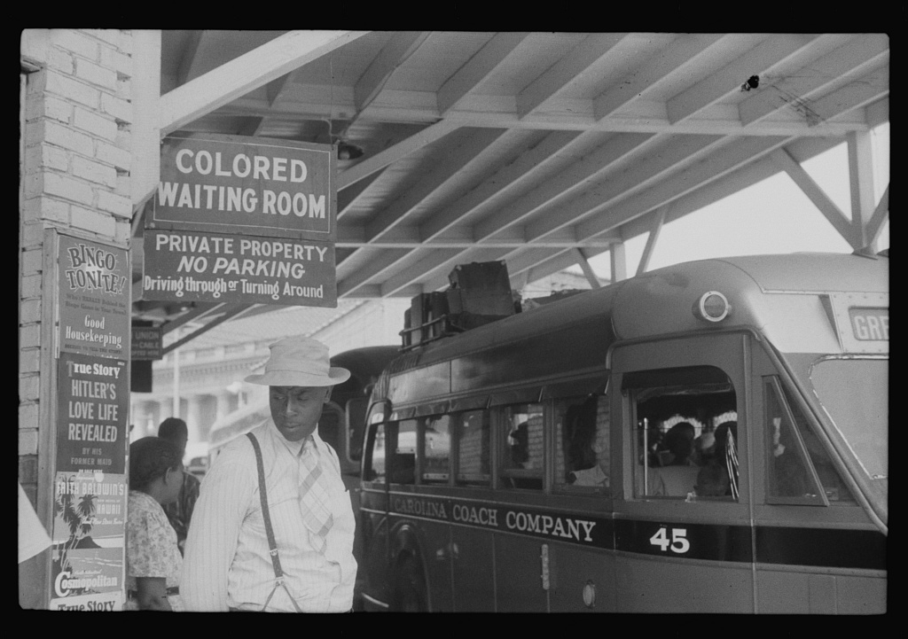

Directions: Study the photograph and the background, then answer the questions.

Background. The photograph shows the segregated waiting room system of southern bus travel in 1940. Twenty years later the sit-ins began at Greensboro on February 1, 1960, SNCC was founded that April, and in December 1960 the Supreme Court decided Boynton v. Virginia. In May 1961 the Freedom Rides set out to test that decision, and that fall the Interstate Commerce Commission ordered interstate travel desegregated. In Albany, Georgia, the movement then met a police chief who had studied its method.
1. What does the photograph show, and what system does its sign name? Connect it to the Freedom Rides: what were the riders testing, and under which court decision?
2. State the Greensboro facts in order: the date the sit-in began, the store, the number of students who began it, and the date the counter was desegregated.
3. Nashville's students had trained in workshops before they sat in. Name their trainer, state what happened to them on February 27, 1960, and state the result reached on May 10, 1960, naming the student and the mayor in the courthouse exchange.
4. Put the federal answer and the limit in sequence. Give the ICC regulations' adoption and effective dates, then name the city and the police chief whose method denied the movement a crisis in 1961 and 1962, and state how the Albany campaign ended.
1. What does the photograph show, and what were the riders testing? The photograph shows a traveler standing under a Colored Waiting Room sign at the Durham, North Carolina bus station in May 1940, the de jure segregation of southern travel, in which waiting rooms, restrooms, and lunch counters were divided by race. The Freedom Riders of 1961 were testing whether that system would obey Boynton v. Virginia (December 1960), in which the Supreme Court held that terminal and restaurant facilities serving interstate passengers must be provided without the discriminations prohibited by the Interstate Commerce Act. (Blueprint 8)
2. State the Greensboro facts in order. The sit-in began on February 1, 1960, at the Woolworth store in Greensboro, North Carolina. Four freshmen from North Carolina Agricultural and Technical College began it, Joseph McNeil, Ezell Blair Jr., Franklin McCain, and David Richmond, and they returned with more students each day. Woolworth desegregated that counter on July 25, 1960. (Blueprint 7)
3. Name the Nashville trainer, the February 27 outcome, and the May 10 result. The students trained in workshops run by James Lawson from the fall of 1959. On February 27, 1960, they were beaten and arrested, and they filled the jails rather than posting bail. After the April 19 courthouse march, at which Diane Nash questioned Mayor Ben West, Nashville desegregated its lunch counters on May 10, 1960, the first major southern city to do so. (Blueprint 7)
4. Give the ICC dates, then the Albany limit. The Interstate Commerce Commission adopted its regulations on September 22, 1961, effective November 1, 1961, barring carriers from seating passengers by race. In Albany, Georgia, Police Chief Laurie Pritchett answered with polite mass arrests and jail space borrowed from surrounding counties, so no crisis forced federal action. King left Albany on August 10, 1962, without a desegregation agreement. (Blueprint 8)
Teacher note. This check is formative. Questions 1 and 4 carry blueprint entry 8 and separate students who can connect a court decision to its enforcement, and a victory to its limit, from students who hold the events as a list. Question 3 is the blueprint 7 diagnostic for the Nashville sequence; a student who cannot produce the trainer, the arrests, and the May 10 date in order has not yet secured the sit-in half of the lesson.